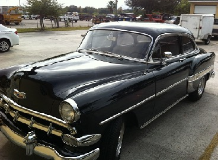

Services · PF Auto Glass, Inc.
Glass, seals,motors & sensors.
Free mobile service within our service area, free quotes over the phone or at your location, and free help with your insurance claim. We also work at body shops and car dealerships.

01 / Windshield replacement
New glass only. Never used.
We use only new glass that meets or exceeds the vehicle manufacturer’s specifications, with OEM parts, sealants, glues and molding materials. Used glass is prone to defects as it ages and doesn’t absorb adhesives properly. New glass gives you a clear view without scratches or haze.
Once we know what your vehicle needs, we schedule the service call as soon as the right OEM parts and materials are confirmed. The on-site work takes about 40 minutes, then about an hour for the adhesives to cure.
- OEM parts & materials
- All makes & models
- Lifetime warranty
- Equal-to-new results
Fix the chip before it spreads.
02 / Windshield & chip repair
Small damage, small fix.
A damaged windshield that blocks your view is dangerous to drive with, and it can get you a traffic ticket. We repair windshield chips and other auto window chips, so a small problem doesn’t turn into a full replacement.
Not sure whether yours can be repaired? Call (813) 741-3633 for a free quote over the phone.

03 / Door, side & vent glass
Cars, SUVs, vans and trucks.
Auto door glass replacement, car door window repair, side windows and vent windows. We service all makes and models, domestic and foreign, and we also handle classic car glass.
With comprehensive insurance in Florida, side glass is covered after your deductible.

04 / Rear window replacement
Back glass, defroster tabs included.
Car rear window replacement, plus repair of defroster tabs and window leaks caused by wind, water and noise. Sunroof and moonroof windows too.
06 / Recalibration
Your windshield has cameras now.
Modern vehicles use ADAS: lane departure warning and lane keep assist, forward collision warning and automatic emergency braking, adaptive cruise control, traffic sign recognition and pedestrian detection. Removing a windshield can shift these sensors, so they are reset and aligned afterwards.
Recalibration is almost always needed after a windshield replacement, sometimes after camera removal, suspension work or a wheel alignment, and occasionally after a chip repair. It is done at our service center at 501 S. Faulkenburg Rd, Tampa.
In the shop, with targets and calibration tools. The vehicle stays still.
Driving at set speeds and conditions using real road data.
Typical time, depending on make, model and type. Some vehicles need both.
Warning lights may stay on and safety systems can react late or not at all.
07 / Commercial customers
We work at your shop, lot or fleet yard.
- Business owners with cars, trucks or vans
- Insurance companies & independent agents
- New car dealers, auto body & mechanics
- Fleet services
- Car washes, tint & detail companies
A few of our customers & partners
Automotive Collision By Mike, Brandon · Allen Dodds Elite Body Shop, Plant City · Boyce Paint & Body, Seffner · Dash Automotive, Tampa · Hi Tech Automotive, Brandon · James Knight Electric, Tampa · Long Tire & Auto, Brandon & Lithia · Pioneer Tire & Auto, Riverview · Precision Automotive, Brandon · Yellow Cab, Tampa